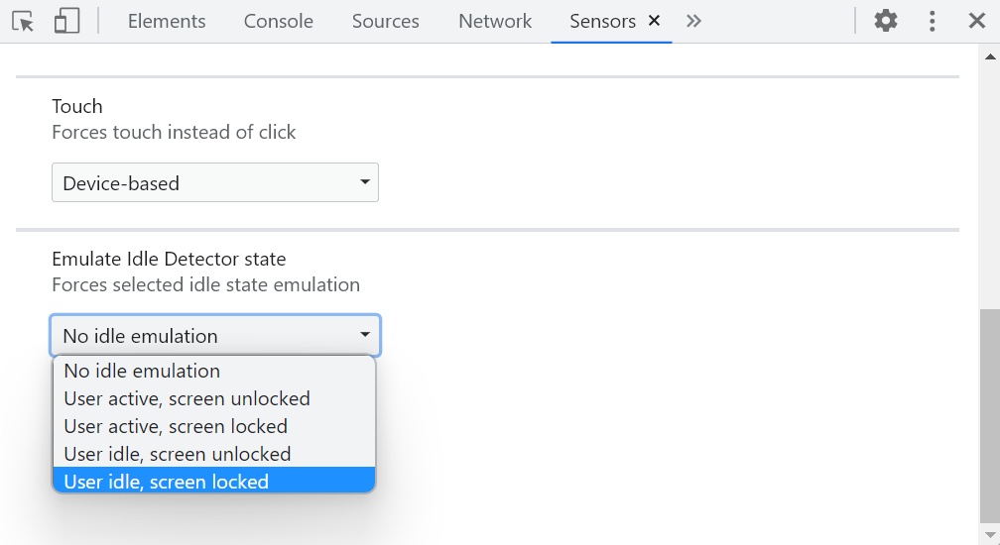

179 DevTools Tips
-
View console logs from non-Safari browsers on an iPhone
 Using the about:inspect special page you can see your website's logs in Chrome or Edge running on iPhone! This is important because debugging a webpage that's running in Safari on an iPhone isn't hard... Read more
Using the about:inspect special page you can see your website's logs in Chrome or Edge running on iPhone! This is important because debugging a webpage that's running in Safari on an iPhone isn't hard... Read more -
Disable abusive debugger statements that prevent inspecting websites
 Some websites make it impossible to use DevTools by adding debugger statements in their code. The statements don't do anything for normal users, but as soon as DevTools is opened, the JavaScript execu... Read more
Some websites make it impossible to use DevTools by adding debugger statements in their code. The statements don't do anything for normal users, but as soon as DevTools is opened, the JavaScript execu... Read more -
Emulate color schemes
 In CSS, you can use the prefers-color-scheme media feature (docs) to detect if the user prefers using a light or a dark theme in their operating system. This is useful to style your website in a way t... Read more
In CSS, you can use the prefers-color-scheme media feature (docs) to detect if the user prefers using a light or a dark theme in their operating system. This is useful to style your website in a way t... Read more -
Simulate multiple devices that are kept in sync
 Instead of simulating devices one by one and switching between them, Polypane supports testing on multiple simulated devices and viewports at the same time. It lets you test different simulated device... Read moreCategories: Supported by:
Instead of simulating devices one by one and switching between them, Polypane supports testing on multiple simulated devices and viewports at the same time. It lets you test different simulated device... Read moreCategories: Supported by: -
Show web vitals
 Web vitals are a set of metrics that help you determine how well-built your page is. You can learn more about them here. These scores can be obtained with various online checks like PageSpeed Insights... Read moreCategories: Supported by:
Web vitals are a set of metrics that help you determine how well-built your page is. You can learn more about them here. These scores can be obtained with various online checks like PageSpeed Insights... Read moreCategories: Supported by: -
Manipulate global objects on page load, before other scripts run
 When a page loads, and all of its global objects are ready, but before the JavaScript code of the page actually kicks-in, is a great time to inject debugging code. For example, it might be useful to r... Read moreCategories: Supported by:
When a page loads, and all of its global objects are ready, but before the JavaScript code of the page actually kicks-in, is a great time to inject debugging code. For example, it might be useful to r... Read moreCategories: Supported by: -
Autofill forms for testing
 In Polypane you can right-click any form on the page and select Autofill form to add dummy values to all input elements. This prevents you from having to go field-by-field to fill in all required fiel... Read moreCategories: Supported by:
In Polypane you can right-click any form on the page and select Autofill form to add dummy values to all input elements. This prevents you from having to go field-by-field to fill in all required fiel... Read moreCategories: Supported by: -
Reload a page when there's changes on disk
 While working on a page locally and you're not using a hot reloading dev server, you need to reload the browser yourself to see the change. You need to do this every time you save a file. Wouldn't it... Read moreCategories: Supported by:
While working on a page locally and you're not using a hot reloading dev server, you need to reload the browser yourself to see the change. You need to do this every time you save a file. Wouldn't it... Read moreCategories: Supported by: -
Test your PWA protocol handlers
 Progressive Web Apps (PWA) can register themselves to handle URIs with pre-defined or custom protocols (such as mailto, geo, or web+foo). This is a great capability that makes it possible for installe... Read more
Progressive Web Apps (PWA) can register themselves to handle URIs with pre-defined or custom protocols (such as mailto, geo, or web+foo). This is a great capability that makes it possible for installe... Read more -
See formatted JSON responses
 Edge (starting with 110), Firefox and Polypane all have a very nice JSON viewer tool that makes it easy to view JSON responses from your server directly in the browser window. You don't even need to o... Read more
Edge (starting with 110), Firefox and Polypane all have a very nice JSON viewer tool that makes it easy to view JSON responses from your server directly in the browser window. You don't even need to o... Read more -
Emulate idle detection states

The Idle Detection API is useful for web developers to detect when the user isn't interacting with their device. This can be useful for chat applications, for example, to mark the user as away. Note:... Read moreCategories: Supported by:
-
Debug unwanted scrollbars
 Scrollbars can sometimes appear on a webpage unexpectedly. When this happens, finding which HTML element is the cause of the scrollbars isn't always straightforward. DevTools provides features that he... Read more
Scrollbars can sometimes appear on a webpage unexpectedly. When this happens, finding which HTML element is the cause of the scrollbars isn't always straightforward. DevTools provides features that he... Read more -
Find the most expensive CSS selectors
 When it comes to improving web rendering performance, we often spend time working on JavaScript code. But CSS has an important role to play too in how fast a web page renders. CSS selectors, in partic... Read more
When it comes to improving web rendering performance, we often spend time working on JavaScript code. But CSS has an important role to play too in how fast a web page renders. CSS selectors, in partic... Read more -
List all supported console functions
 You've probably already used console.log() in your code to print debugging values to the Console tool in DevTools. But the console namespace actually has many other functions too! To list them all, op... Read more
You've probably already used console.log() in your code to print debugging values to the Console tool in DevTools. But the console namespace actually has many other functions too! To list them all, op... Read more -
Hide or pin the information tooltip while inspecting page elements
 When selecting elements from the page using the inspect tool, the hovered elements get highlighted, and an information tooltip follows your mouse around and gives you information about the hovered ele... Read more
When selecting elements from the page using the inspect tool, the hovered elements get highlighted, and an information tooltip follows your mouse around and gives you information about the hovered ele... Read more -
Understand flexbox item sizing
 Flexbox is a great way to easily distribute elements and empty space in a row or a column, and create interesting layouts. It only takes a couple of CSS properties to create nice layouts that automati... Read moreCategories: Supported by:
Flexbox is a great way to easily distribute elements and empty space in a row or a column, and create interesting layouts. It only takes a couple of CSS properties to create nice layouts that automati... Read moreCategories: Supported by: -
Customize keyboard shortcuts
 DevTools comes with tons of keyboard shortcuts. Some are well known (like F12 to open DevTools), but there are many others which you might not be familiar with, and which could make your life easier.... Read more
DevTools comes with tons of keyboard shortcuts. Some are well known (like F12 to open DevTools), but there are many others which you might not be familiar with, and which could make your life easier.... Read more -
Re-use scripts as snippets
 The Console is great to write short JavaScript expressions that read from the document or manipulate it. But it's also a terrible editor. You can actually use a full editor in Edge, Chrome, and Safari... Read more
The Console is great to write short JavaScript expressions that read from the document or manipulate it. But it's also a terrible editor. You can actually use a full editor in Edge, Chrome, and Safari... Read more -
Simulate different devices and screen sizes
 All browser DevTools have a built-in mode that you can use to test a webpage under different screen sizes and device capabilities. As a web developer, it is very important to realize that your website... Read more
All browser DevTools have a built-in mode that you can use to test a webpage under different screen sizes and device capabilities. As a web developer, it is very important to realize that your website... Read more -
Ignore JavaScript code to ease debugging
 Debugging JavaScript can quickly get out of hand when you have a lot of code and many functions that call each other. What's even worse is when a lot of this code isn't even yours. This can happen whe... Read more
Debugging JavaScript can quickly get out of hand when you have a lot of code and many functions that call each other. What's even worse is when a lot of this code isn't even yours. This can happen whe... Read more -
Edit JavaScript functions while debugging to test a quick fix
 Sometimes, when debugging JavaScript code in DevTools, you may want to test a quick change and see whether that fixes the bug. Usually, this involves the following steps: Pause at a breakpoint, or an... Read more
Sometimes, when debugging JavaScript code in DevTools, you may want to test a quick change and see whether that fixes the bug. Usually, this involves the following steps: Pause at a breakpoint, or an... Read more -
Install or create extensions to customize DevTools
 There's a lot of tools in DevTools already, probably more than you use. But in some cases, you may need very specific tools that aren't available by default. Thankfully, DevTools can be extended with... Read more
There's a lot of tools in DevTools already, probably more than you use. But in some cases, you may need very specific tools that aren't available by default. Thankfully, DevTools can be extended with... Read more -
Use DevTools in another language
 If you want to use DevTools in another language than English, you can do it across all major browsers. In Firefox, DevTools will always match the language of the browser, so if you downloaded Firefox... Read more
If you want to use DevTools in another language than English, you can do it across all major browsers. In Firefox, DevTools will always match the language of the browser, so if you downloaded Firefox... Read more -
Access results from recent Console evaluations
 Imagine you evaluate a long expression like $$('*').map(el => Object.values(el.attributes).map(attr => {return {name: attr.name, value: attr.value}})) which extracts the attributes from all of t... Read more
Imagine you evaluate a long expression like $$('*').map(el => Object.values(el.attributes).map(attr => {return {name: attr.name, value: attr.value}})) which extracts the attributes from all of t... Read more -
Simulate a different latitude/longitude geolocation
 If your website has features that depend on the geographic location of your users, you can test these features by simulating different geolocations right from DevTools! Chrome and Edge DevTools have a... Read more
If your website has features that depend on the geographic location of your users, you can test these features by simulating different geolocations right from DevTools! Chrome and Edge DevTools have a... Read more
 edge
edge
 chrome
chrome
 firefox
firefox
 safari
safari
 polypane
polypane